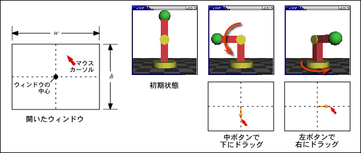
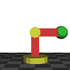

ロボットアームの実験
簡単なロボットアームを，マウスで動かすプログラムを作ってみましょう． これまでに作ったプログラムをベースを改造するのが手っ取り早いと思いますが， うまく行かなければ下の手順を参考にしてください． ソースファイル名は prog4.c としてください．
下のプログラムは垂直に伸びたロボットアームを静止画で表示します． 土台や関節の部分に使っている円柱やアームの部分に使っている直方体は， それぞれ myCylinder() および myBox() として， このプログラムの中で定義しています．
#include <stdlib.h>
#include <math.h>
#include <GL/glut.h>
/*
* 直方体を描く
*/
static void myBox(double x, double y, double z)
{
GLdouble vertex[][3] = {
{ -x, -y, -z },
{ x, -y, -z },
{ x, y, -z },
{ -x, y, -z },
{ -x, -y, z },
{ x, -y, z },
{ x, y, z },
{ -x, y, z }
};
const static int face[][4] = {
{ 0, 1, 2, 3 },
{ 1, 5, 6, 2 },
{ 5, 4, 7, 6 },
{ 4, 0, 3, 7 },
{ 4, 5, 1, 0 },
{ 3, 2, 6, 7 }
};
const static GLdouble normal[][3] = {
{ 0.0, 0.0,-1.0 },
{ 1.0, 0.0, 0.0 },
{ 0.0, 0.0, 1.0 },
{-1.0, 0.0, 0.0 },
{ 0.0,-1.0, 0.0 },
{ 0.0, 1.0, 0.0 }
};
const static GLfloat red[] = { 0.8, 0.2, 0.2, 1.0 };
int i, j;
/* 材質を設定する */
glMaterialfv(GL_FRONT, GL_DIFFUSE, red);
glBegin(GL_QUADS);
for (j = 0; j < 6; ++j) {
glNormal3dv(normal[j]);
for (i = 4; --i >= 0;) {
glVertex3dv(vertex[face[j][i]]);
}
}
glEnd();
}
/*
* 円柱を描く
*/
static void myCylinder(double radius, double height, int sides)
{
const static GLfloat yellow[] = { 0.8, 0.8, 0.2, 1.0 };
double step = 6.28318530717958647692 / (double)sides;
int i = 0;
/* 材質を設定する */
glMaterialfv(GL_FRONT, GL_DIFFUSE, yellow);
/* 上面 */
glNormal3d(0.0, 1.0, 0.0);
glBegin(GL_TRIANGLE_FAN);
while (i < sides) {
double t = step * (double)i++;
glVertex3d(radius * sin(t), height, radius * cos(t));
}
glEnd();
/* 底面 */
glNormal3d(0.0, -1.0, 0.0);
glBegin(GL_TRIANGLE_FAN);
while (--i >= 0) {
double t = step * (double)i;
glVertex3d(radius * sin(t), -height, radius * cos(t));
}
glEnd();
/* 側面 */
glBegin(GL_QUAD_STRIP);
while (i <= sides) {
double t = step * (double)i++;
double x = sin(t);
double z = cos(t);
glNormal3d(x, 0.0, z);
glVertex3f(radius * x, height, radius * z);
glVertex3f(radius * x, -height, radius * z);
}
glEnd();
}
/*
* 地面を描く
*/
static void myGround(double height)
{
const static GLfloat ground[][4] = {
{ 0.6, 0.6, 0.6, 1.0 },
{ 0.3, 0.3, 0.3, 1.0 }
};
int i, j;
glBegin(GL_QUADS);
glNormal3d(0.0, 1.0, 0.0);
for (j = -5; j < 5; ++j) {
for (i = -5; i < 5; ++i) {
glMaterialfv(GL_FRONT, GL_DIFFUSE, ground[(i + j) & 1]);
glVertex3d((GLdouble)i, height, (GLdouble)j);
glVertex3d((GLdouble)i, height, (GLdouble)(j + 1));
glVertex3d((GLdouble)(i + 1), height, (GLdouble)(j + 1));
glVertex3d((GLdouble)(i + 1), height, (GLdouble)j);
}
}
glEnd();
}
/*
* 画面表示
*/
static void display(void)
{
const static GLfloat blue[] = { 0.2, 0.2, 0.8, 1.0 }; /* 球の色 */
const static GLfloat lightpos[] = { 3.0, 4.0, 5.0, 1.0 }; /* 光源の位置 */
/* 画面クリア */
glClear(GL_COLOR_BUFFER_BIT | GL_DEPTH_BUFFER_BIT);
/* モデルビュー変換行列の初期化 */
glLoadIdentity();
/* 光源の位置を設定 */
glLightfv(GL_LIGHT0, GL_POSITION, lightpos);
/* 視点の移動（シーンの方を奥に移す）*/
glTranslated(0.0, 0.0, -10.0);
/* シーンの描画 */
myGround(-2.0); /* 地面 */
glTranslated(0.0, -1.8, 0.0);
myCylinder(1.0, 0.2, 16); /* 土台 */
glTranslated(0.0, 1.0, 0.0);
myBox(0.3, 1.0, 0.3); /* １番目の腕 */
glTranslated(0.0, 1.0, 0.0);
glRotated(90.0, 1.0, 0.0, 0.0);
myCylinder(0.4, 0.4, 16); /* 関節 */
glTranslated(0.0, 0.0, -1.0);
myBox(0.3, 0.3, 1.0); /* ２番目の腕 */
glTranslated(0.0, 0.0, -1.0);
glMaterialfv(GL_FRONT, GL_DIFFUSE, blue);
glutSolidCube(0.9); /* ハンド */
glFlush();
}
static void resize(int w, int h)
{
/* ウィンドウ全体をビューポートにする */
glViewport(0, 0, w, h);
/* 透視変換行列の指定 */
glMatrixMode(GL_PROJECTION);
/* 透視変換行列の初期化 */
glLoadIdentity();
gluPerspective(30.0, (double)w / (double)h, 1.0, 100.0);
/* モデルビュー変換行列の指定 */
glMatrixMode(GL_MODELVIEW);
}
static void keyboard(unsigned char key, int x, int y)
{
/* ESC か q をタイプしたら終了 */
if (key == '\033' || key == 'q') {
exit(0);
}
}
static void init(void)
{
/* 初期設定 */
glClearColor(1.0, 1.0, 1.0, 1.0);
glEnable(GL_DEPTH_TEST);
glEnable(GL_CULL_FACE);
glEnable(GL_LIGHTING);
glEnable(GL_LIGHT0);
}
int main(int argc, char *argv[])
{
glutInit(&argc, argv);
glutInitDisplayMode(GLUT_RGBA | GLUT_DEPTH);
glutCreateWindow(argv[0]);
glutDisplayFunc(display);
glutReshapeFunc(resize);
glutKeyboardFunc(keyboard);
init();
glutMainLoop();
return 0;
}
このロボットアームをマウスで操作できるようにしてください． どういう操作方法にするかは自分で考えて下さい． うまい方法が思い付かなければ，以下の方式を参考にして下さい．
例えば，マウスの左ボタンを押しながらマウスを左右にドラッグすれば ロボットアームの土台の部分が回転し， マウスの中ボタンを押しながらマウスを前後にドラッグすれば 関節の部分が回転するようにしてください． 関節の部分は一定角度以上曲がらないように工夫しましょう． 時間が余ればマウスの右ボタンで手首を回したり， 関節をもう一つ増やして操作できるようにしてみてください．


- クリックしたマウスのボタンを検出するために， このプログラムにマウスのクリック時に呼び出す関数を追加し， それを glutMouseFunc() の引数に指定します． この関数ではマウスのどのボタンが押されたのかを変数に記録します． この変数は他の関数でも使用できるように，外部変数として宣言します．
- ドラッグ中のマウスの位置を得るために， このプログラムにマウスのドラッグ中に呼び出す関数を追加し， それを glutMotionFunc() の引数に指定します．マウスの位置は追加した関数の引数で得ることができますから， これらも適当な外部変数に代入します．
- 押されているマウスのボタンを示す変数にしたがって， 台座，腕，ハンドなどの回転角をマウスの位置をもとに変更します． 物体の回転角を変更するには，glRotated() を物体を描画している部分より前に追加します．
- もちろん，腕は滑らかに動くようにしてください． また画面のちらつきも抑制するようにしてください． アニメーションはマウスをドラッグしている間だけ行うようにしましょう．
なお，これはあくまで「一例」に過ぎません． 自分の思う方法でロボットの操作方法を考えてくれれば結構です． オリジナルなアイデアの操作方法を期待します．